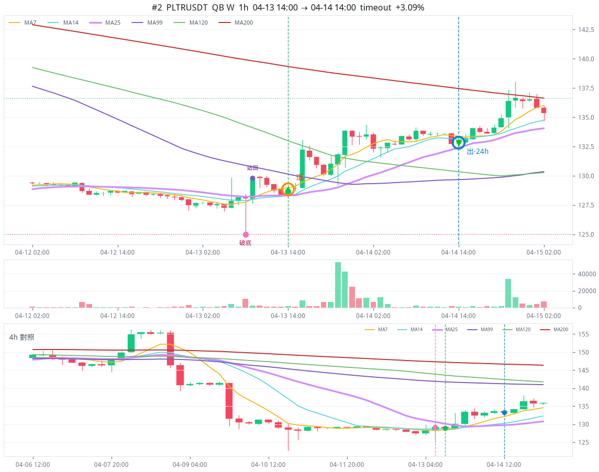
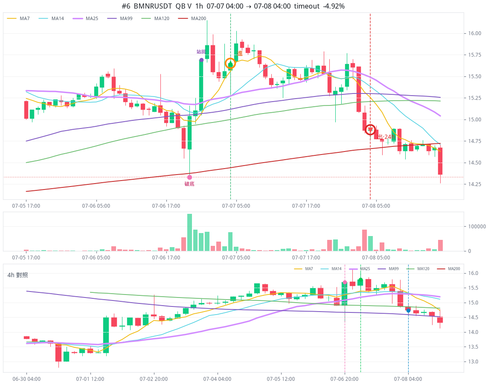

近 276 天 · 216 檔訊號池 52 筆 · 做成 32 單
全部本金開倉，平了才能開下一筆。不計資金費。黃點高點、紅點谷底。
整段線性圖。後面漲到 675，前面 131→98 看起來會扁，回撤放大見下圖。
高點 04-13 14:00 PLTRUSDT 後 131.26 USDT
谷底 07-07 04:00 BMNRUSDT 後 98.40 USDT
最痛單筆 07-07 04:00 BMNRUSDT 價格 -4.92%（帳戶 -14.76%）
PLTRUSDT 04-13 14:00 · timeout · 價格 +3.09% · 120.13 → 131.26 USDT

BMNRUSDT 07-07 04:00 · timeout · 價格 -4.92% · 115.44 → 98.40 USDT

BMNRUSDT 07-07 04:00 · timeout · 價格 -4.92% · 115.44 → 98.40 USDT
04-13 到 07-07 · 5 單 · 131 → 98
| 進場 | 標的 | 出場 | 價格 | 帳戶 | 餘額 |
|---|---|---|---|---|---|
| 04-13 14:00 | PLTRUSDT 高點 | timeout | +3.09% | +9.27% | 131.26 |
| 04-30 05:00 | CRCLUSDT | timeout | -4.36% | -13.09% | 114.08 |
| 05-09 07:00 | PLTRUSDT | timeout | +0.06% | +0.17% | 114.28 |
| 05-30 18:00 | TSLAUSDT | timeout | +0.34% | +1.01% | 115.44 |
| 07-07 04:00 | BMNRUSDT 谷底 最痛 | timeout | -4.92% | -14.76% | 98.40 |